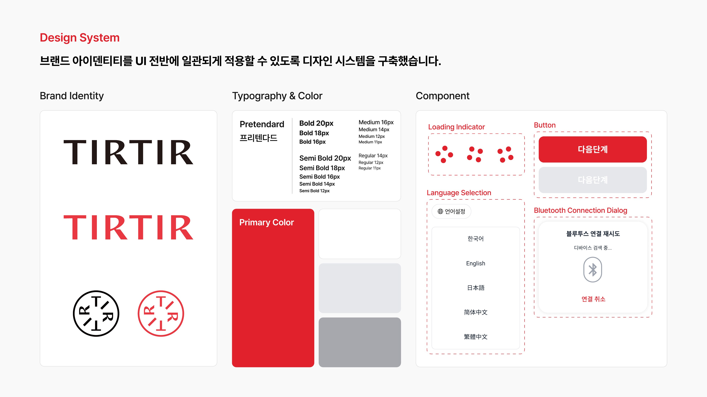
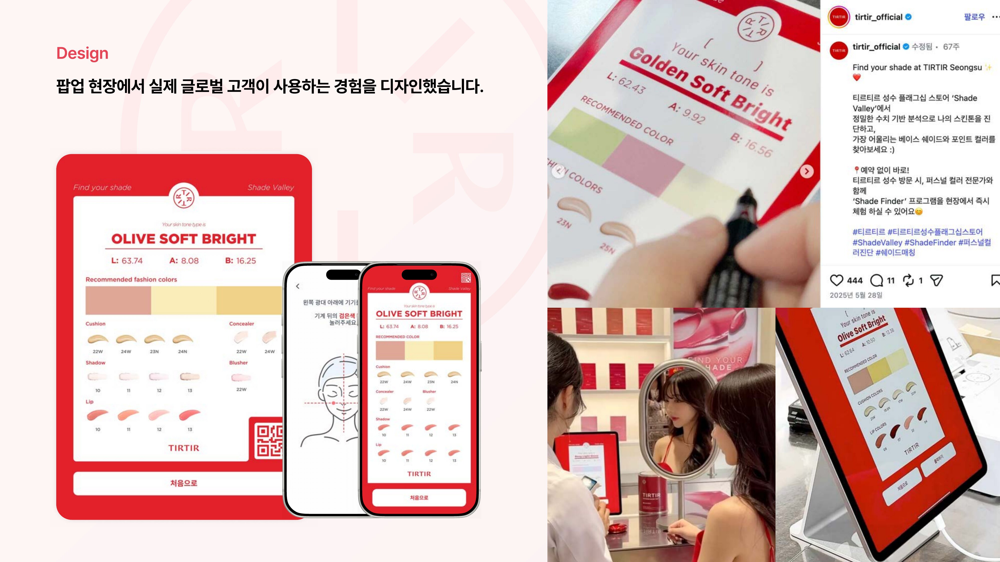

Flagship Store Skin-tone Diagnosis
TIRTIR
매장에 방문한 글로벌 고객이 정밀 수치 기반으로 자신의 스킨톤을 진단하고, 어울리는 컬러를 바로 추천받도록 만든 팝업 스토어 진단 서비스입니다.
01
Overview
TIRTIR 성수 플래그십 스토어 'Shade Valley'에 방문한 고객이 예약 없이 즉시 스킨톤을 진단받고, 추천 컬러의 쿠션·컨실러·섀도우·블러셔·립 제품을 확인할 수 있는 태블릿 기반 진단 서비스입니다. 진단 결과는 L·A·B 수치와 함께 'Olive Soft Bright'와 같은 스킨톤 타입명으로 제시되고, QR코드로 저장할 수 있습니다.
02
Design System
매장을 찾는 고객이 다국적이라는 점을 고려해 한국어 · English · 日本語 · 简体中文 · 繁體中文 5개 언어 전환을 지원했고, 진단 기기와 연동되는 블루투스 연결 재시도 다이얼로그까지 컴포넌트로 정의했습니다. TIRTIR 브랜드의 레드 컬러와 워드마크를 유지하면서 로딩 인디케이터 · 버튼 · 언어 선택 컴포넌트를 새로 만들었습니다.

03
Design
팝업 현장에서 실제 글로벌 고객이 사용하는 경험을 디자인했습니다. 진단 → 결과(스킨톤 타입 · 추천 컬러) → 처음으로 돌아가기까지 하나의 흐름으로 이어지도록 구성해, 직원 도움 없이도 고객이 스스로 체험을 끝낼 수 있도록 했습니다.

출시 후 티르티르 공식 인스타그램에 성수 플래그십 스토어 'Shade Finder' 프로그램으로 소개되며, 실제 매장에서 운영되고 있는 것을 확인했습니다.
04
Result
Shade Finder
예약 없이 즉시 체험할 수 있는 진단 프로그램으로 TIRTIR 성수 플래그십 스토어에서 운영되고 있습니다.